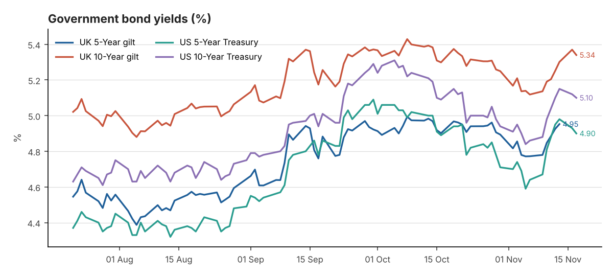
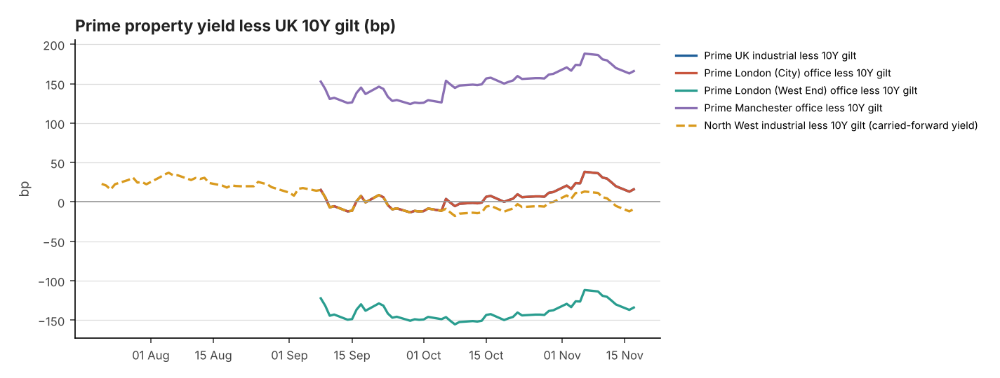

Date: 18 November 2026
Reporting time: 06:30 UK time
Generated 2026-11-18 06:30 UTC · run 20261118T063014Z · commentary: analyst note. Each figure shows its own observation date. Definitions, data-quality notes and full sources are in the appendix.
Alerts - New listings: 5 new North West industrial listings (58,840 sq ft); largest Unit 41 Road One, Winsford, Cheshire, 33,585 sq ft. - ⚑ Rexford Industrial Realty moved -3.3% on 17 Nov 2026. - North West deal: New home for saved gas meter outfit (17,000 sq ft). - Corporate action — SEGRO: Recommended share offer from Prologis (0.0920 new Prologis shares per SEGRO share, partial cash alternative at 1,031.7p; completion expected H1 2027). Shares trade on deal terms.
| Market | Latest Yield | Daily | 7-Day | 30-Day | Observed | Source |
|---|---|---|---|---|---|---|
| UK 5-Year gilt | 4.95% | +2.7bp | +18bp | -1.7bp | 13 Nov 2026 | Bank of England Database (IADB) |
| UK 10-Year gilt | 5.34% | -3bp† | +14.9bp† | +4.1bp† | 17 Nov 2026 | Trading Economics (table dated Nov/17) (secondary) |
| US 5-Year Treasury | 4.90% | -3bp | +9bp | +1bp | 17 Nov 2026 | US Treasury - Daily Treasury Par Yield Curve Rates |
| US 10-Year Treasury | 5.10% | -2bp | +12bp | +1bp | 17 Nov 2026 | US Treasury - Daily Treasury Par Yield Curve Rates |
| UK 2-Year gilt | 5.04% | +3.5bp† | +28bp† | Not verified | 16 Nov 2026 | Trading Economics; Reuters-sourced report says back above 5% (secondary) |
| UK 30-Year gilt | 5.79% | -3bp | Not verified | Not verified | 16 Nov 2026 | Trading Economics (secondary) |
| US 2-Year Treasury | 4.80% | -3bp | +7bp | +6bp | 17 Nov 2026 | US Treasury - Daily Treasury Par Yield Curve Rates |
| US 30-Year Treasury | 5.46% | 0bp | +11bp | +3bp | 17 Nov 2026 | US Treasury - Daily Treasury Par Yield Curve Rates |
10Y less 5Y: UK Not verified · US +20bp (17 Nov 2026)
Changes in basis points. † = comparison crosses sources or instruments (indicative).

| Indicator | Latest | Previous | Date | Change | Source |
|---|---|---|---|---|---|
| BoE Bank Rate | 4.00% | 3.75% | effective 05 Nov 2026 | +25bp | Bank of England Database (IADB) |
| SONIA (overnight fixing) | 3.9832% | 3.9846% | 13 Nov 2026 | -0.1bp | FRED IUDSOIA |
| 5Y SONIA swap (finance-cost reference) | 4.58% ⚠ stale | 4.74% | 04 Nov 2026 | -16bp | Knight Frank Prime Yield Guide (Macrobond/ICAP) (secondary) |
| Fed funds target range | 3.75–4.00% | 3.50–3.75% | effective 17 Sep 2026 | +25bp | FRED DFEDTARU |
Next MPC decision: 17 Dec 2026
Confirmed: - Bank Rate 4.00%; next MPC decision 17 December. - The labour data was mixed: lower unemployment and softer pay growth. - October CPI at 07:00 today is the last major inflation print before the MPC.
Not verified: market-implied pricing.
Interpretation: softer pay growth slightly weakens the case for rapid hikes. The 2Y gilt at about 5.0% still prices further tightening, so CPI today is pivotal for swap rates and property debt costs.
| Indicator | Latest | Previous | Period | Trend | Source |
|---|---|---|---|---|---|
| UK CPI (12m) | 3.5% | 3.1% | Sep 2026 (pub. 21 Oct) | Accelerating | ONS MM23 |
| UK CPIH (12m) | 3.6% | 3.3% | Sep 2026 (pub. 21 Oct) | Accelerating | ONS MM23 |
| UK core CPI (12m, ex energy, food, alcohol & tobacco) | 2.8% | 2.6% | Sep 2026 (pub. 21 Oct) | Accelerating | ONS MM23 |
| US CPI-U (12m, NSA) | 3.7% | 3.4% | Sep 2026 | Accelerating | BLS CPI via FRED CPIAUCNS |
| US core CPI-U (12m, NSA) | 2.6% | 2.4% | Sep 2026 | Broadly stable | BLS CPI via FRED CPILFENS |
Next ONS inflation release: see Section 14
| Sector | Latest | Basis | Previous | Move | Evidence | Source |
|---|---|---|---|---|---|---|
| UK Industrial & Logistics | 5.50% | NIY | 5.25–5.50% | +12.5bp | Nov 2026 | Knight Frank Prime Yield Guide |
| Prime Distribution Warehouses ‡ | 5.50–5.75% | Not stated | 5.50% | +12.5bp | Nov 2026 | Knight Frank Prime Yield Guide |
| South East Industrial ‡ | 5.25–5.50% | Not stated | 5.25% | +12.5bp | Nov 2026 | Knight Frank Prime Yield Guide |
| Greater London Industrial | 5.25% | Not stated | 5.00–5.25% | +12.5bp | Nov 2026 | Knight Frank Prime Yield Guide |
| Prime Multi-let Industrial (Rest of UK) ‡ | 5.25–5.50% | Not stated | 5.25% | +12.5bp | Nov 2026 | Knight Frank Prime Yield Guide |
| North West Industrial ‡ | 5.25% | NIY | — | — | Q4 2025 ⚠ carried forward (322d) | Knight Frank LOGIC: North West 2025 Review |
| UK Logistics (average of 71 submarkets) ‡ | 5.74% | NIY | 5.59% | +15bp | Q3 2026 ⚠ carried forward (49d) | Cushman & Wakefield UK Industrial MarketBeat |
| London West End Offices | 4.00% | Not stated | 3.75–4.00% | +12.5bp | Nov 2026 | Knight Frank Prime Yield Guide |
| London City Offices | 5.50% | Not stated | 5.25–5.50% | +12.5bp | Nov 2026 | Knight Frank Prime Yield Guide |
| Manchester Offices ‡ | 7.00% | Not stated | 6.75–7.00% | +12.5bp | Nov 2026 | Knight Frank Prime Yield Guide |
| Regional UK Offices ‡ | 7.00% | Not stated | 6.75–7.00% | +12.5bp | Nov 2026 | Knight Frank Prime Yield Guide |
Published prime yields, carried forward until new evidence appears — not daily valuations. ‡ = substitution; see appendix.
| Spread | Property yield | UK 10Y gilt | Latest spread | At evidence date | Previous comparable | Change (property / gilt) | Driver |
|---|---|---|---|---|---|---|---|
| Prime UK industrial less 10Y gilt | 5.50% (NIY, Nov 2026) | 5.34% (17 Nov) | +16bp | +38.2bp | +3.8bp (Oct 2026) | +12.2bp (+12.5bp / -0.3bp) | Property-yield-driven |
| Prime London (City) office less 10Y gilt | 5.50% (Not stated, Nov 2026) | 5.34% (17 Nov) | +16bp | +38.2bp | +3.8bp (Oct 2026) | +12.2bp (+12.5bp / -0.3bp) | Property-yield-driven |
| Prime London (West End) office less 10Y gilt | 4.00% (Not stated, Nov 2026) | 5.34% (17 Nov) | -134bp | -111.8bp | -146.2bp (Oct 2026) | +12.2bp (+12.5bp / -0.3bp) | Property-yield-driven |
| Prime Manchester office less 10Y gilt | 7.00% (Not stated, Nov 2026) | 5.34% (17 Nov) | +166bp | +188.2bp | +153.8bp (Oct 2026) | +12.2bp (+12.5bp / -0.3bp) | Property-yield-driven |
| North West industrial less 10Y gilt | 5.25% (NIY, Q4 2025) | 5.34% (17 Nov) | -9bp | +78.4bp | Not verified | Not verified | Not verified |
A simple yield gap (property yield midpoint less 10Y gilt) — not a full measure of risk or relative value.

Market commentary (confirmed data points are listed in the appendix)
Gilts held near their highs after the labour data. The 10-year was quoted at about 5.34–5.37% on 17 November, depending on source, against prime industrial yields of 5.50%+, a simple gap of about 16bp. The jobs report was mixed. Unemployment fell to 4.6%, but payrolls were down about 95,000 year on year and vacancies fell to 690,000. Regular pay growth eased to 3.5%. That leaves today's CPI print to decide whether markets extend or trim expectations of further Bank of England hikes.
Property evidence was mostly about income rather than yields. Custodian reported 1.7% ERV growth over six months, led by industrial at 1.3% for the quarter. Henry Boot let a further 39,000 sq ft at Walsall, taking its Origin portfolio to 67% let. Aberdeen bought a fully let, EPC A industrial estate at Crawley for £25m for a pension fund, though the yield was not disclosed. Landsec's development freeze quantifies the squeeze: London office build costs are up 41% in five years against flat prime values.
Listed logistics fell in the US. Rexford dropped 3.3% and Prologis 1.6%, which lowers the SEGRO offer value. UK prices are not verified.
Interpretation: occupier-side data remains healthy, with rents still growing and lettings completing. Pricing remains hostage to gilts. Expect valuers to hold ERVs while moving yields out at the December valuation date.
| Company | Price | Daily | 5-Day | 1-Month | YTD | Mkt cap | Div. yield | Close | Source |
|---|---|---|---|---|---|---|---|---|---|
| SEGRO (SGRO.L) | 922.6p | — | — | — | — | Not verified | 3.4% | 09 Nov ⚠ stale | StockInvest.us (single dated source) (secondary) |
| Tritax Big Box REIT (BBOX.L) | 145.4p | — | — | — | — | Not verified | 5.5% | 27 Oct ⚠ stale | Kalkine Media (dated 27 Oct 2026; single source) (secondary) |
| LondonMetric Property (LMP.L) | 188.2p | +0.2% | — | — | — | Not verified | 6.7% | 09 Nov ⚠ stale | StockInvest.us; corroborated by AJ Bell last trade 188.2p (secondary) |
| British Land (BLND.L) | Not verified | — | — | — | — | Not verified | — | — | — |
| Landsec (LAND.L) | 659.0p | — | — | — | — | Not verified | — | 27 Oct ⚠ stale | Kalkine Media (dated 27 Oct 2026; single source) (secondary) |
| Derwent London (DLN.L) | Not verified | — | — | — | — | Not verified | — | — | — |
| Great Portland Estates (GPE.L) | Not verified | — | — | — | — | Not verified | — | — | — |
| Prologis (PLD) | $125.56 | -1.6% | -3.5% | -0.1% | -1.6% | Not verified | — | 17 Nov | Nasdaq (official close) |
International logistics comparators
| Company | Price | Daily | 5-Day | 1-Month | YTD | Mkt cap | Div. yield | Close | Source |
|---|---|---|---|---|---|---|---|---|---|
| EastGroup Properties (EGP) | $193.89 | -1.2% | -2.4% | -1.3% | +8.8% | Not verified | — | 17 Nov | Nasdaq (official close) |
| First Industrial Realty Trust (FR) | $54.42 | -0.9% | -1.0% | -7.4% | -5.0% | Not verified | — | 17 Nov | Nasdaq (official close) |
| Rexford Industrial Realty (REXR) | $36.19 | -3.3% ⚑ | -4.6% | -1.8% | -6.5% | Not verified | — | 17 Nov | Nasdaq (official close) |
| WDP (Warehouses De Pauw) (WDP.BR) | Not verified | — | — | — | — | Not verified | — | — | — |
| CTP (CTPNV.AS) | Not verified | — | — | — | — | Not verified | — | — | — |
Latest completed trading session before the 06:30 UK briefing; end-of-day data, not real-time. London prices are in pence (GBX); US in USD; Euronext in EUR. Changes are share-price returns only, excluding dividends (not total shareholder return). ⚑ = daily move of 3% or more. Market caps from Nasdaq are as at retrieval. Dividend yield = latest annualised dividend from company reports ÷ price, where on file. "Not verified" = no licensed price feed returned data and no cited close is on file.
SEGRO — Prologis offer look-through: 0.0920 × Prologis close $125.56 (17 Nov) ÷ $1.3212/£ (13 Nov, FRED) = 874.3p per SEGRO share in Prologis stock, vs SEGRO close 922.6p (-5.2% offer spread). Partial cash alternative: 1031.7p (capped). The FX rate lags by several days, so this is indicative only.
Corporate actions on the watchlist
| Metric | SEGRO | Tritax Big Box REIT | LondonMetric Property |
|---|---|---|---|
| EPRA NTA per share | 902p | 185.88p | 200.6p |
| Loan-to-value | 31% | 32.9% | 36.7% |
| Average cost of debt | 2.8% | 3.6% | 4.0% |
| WAULT | — | 9.9 yrs | 16+ yrs |
| Occupancy | 94.5% | 93.5% | 97.4% |
| Like-for-like rental growth | 5.3% | 5.1% | 5.8% |
| ERV growth | 1.8% | 1.9% | 3.3% |
| Development pipeline | £90m potential rent | 507MW secured power | No direct development |
| Dividend (annualised) | 31.1p | 8.0p | 12.6p |
| Report basis | H1 2026 (30 Jun) | H1 2026 (30 Jun) | FY 2026 (31 Mar) |
| Premium / (discount) to EPRA NTA | +2.3% (price 09 Nov) | -21.8% (price 27 Oct) | -6.2% (price 09 Nov) |
Metrics are from each company's latest report (row "Report basis"; some metrics come from later trading updates — full detail in data/reit_fundamentals.csv). Share-price dates are shown separately.
| Date | Company | Announcement | Type |
|---|---|---|---|
| 2026-11-16 | GPE | GPE sells 2 Aldermanbury Square to Rothesay | Other |
| 2026-11-13 | LAND | Half-year Financial Report | Results |
| 2026-11-05 | DLN | Third Quarter Business Update | Trading update |
| 2026-11-04 | LMP | NON-EXECUTIVE DIRECTOR CHANGES | Board |
Verified: - No new SEGRO, Tritax or LondonMetric announcements. - Custodian: H1 ERV +1.7%; industrial +1.3% in the quarter. - Landsec: 18-month freeze on major office and residential development. - US: Prologis $125.56 (−1.6%), Rexford −3.3%, EastGroup −1.2%. - No verified UK closes since 9 November.
Interpretation: - The US logistics REIT sell-off coincided with higher rate expectations rather than any company-specific news; that is correlation, not established cause. - SEGRO's look-through value (about 874p) is falling with Prologis. A current SEGRO close would show whether the stock is trading off the share offer or the 1,031.7p cash alternative.
Next: LondonMetric half-year results on 24 November.
4. Aberdeen Investments buys £25m Arrow Point industrial asset in Crawley
UK INDUSTRIAL · new · Property Week, published 2026-11-17
Aberdeen Investments has bought Arrow Point in Crawley's Manor Royal Business District for £25m for the Standard Life Pooled Pension Property Fund. The modern units, with 8–12m eaves, 30–40m yards, EPC A and BREEAM Very Good ratings, are fully let to Blueleaf and Leo Cancer Care. The yield was not disclosed.
5. Henry Boot secures Walsall warehouse letting for Origin portfolio
UK INDUSTRIAL · 20,000+ sq ft · new · Property Week, published 2026-11-17
HBD, Henry Boot's development arm, has let a 39,000 sq ft warehouse at SPARK Walsall to wholesaler Tican, after deals with Relay Tech and E.ON UK. The scheme is part of Origin, its industrial joint venture with Feldberg Capital, which is now 67% let across its 711,000 sq ft portfolio.
7. Landsec puts 18-month freeze on major residential and office developments
PLANNING / DEVELOPMENT · follow-up · Property Week, published 2026-11-17
Follow-up to Landsec's results: Landsec will freeze major new residential and office development for 18 months, saying returns no longer offer sufficient upside. Its results presentation cited a 41% rise in London office construction costs over five years while prime London office values have been flat.
1. New home for saved gas meter outfit
NORTH WEST INDUSTRIAL · new · Place North West, published 2026-11-17
Utility Meters Warehouse, bought out of administration by Energy Assets, has signed a five-year lease on 17,000 sq ft (15,600 sq ft warehouse, 1,000 sq ft office) at Unit 6 Kiwi Court, Trafford Park, at £13 per sq ft. It relocates from Leo Industrial Estate nearby and roughly doubles its space. Davies Harrison advised the private landlord.
Why this matters: It is fresh Trafford Park rental evidence: £13 per sq ft for a 17,000 sq ft second-hand unit on a five-year lease. That supports current North West mid-box ERVs despite the rates shock and is a direct comparable for lettings and rent reviews in the M60 core.
2. Liverpool to run rule over Peel's scaled back vision for Liverpool Waters
PLANNING / DEVELOPMENT · new · Place North West, published 2026-11-17
Peel Waters has cut the total development in its 150-acre Liverpool Waters masterplan, adopted 13 years ago, by about 8m sq ft. Changes include about 2m sq ft less office space and homes reduced to 7,111 from 9,000, partly because Everton's stadium occupies former residential land. Liverpool's planning committee considers the changes next week.
Why this matters: Cutting about 2m sq ft of planned offices recognises weaker long-run office demand and viability on the waterfront. Less future supply supports existing Liverpool city-centre office stock, but it also signals that big masterplans are being right-sized to today's costs and rates.
3. Feedback wanted on Warrington local plan
PLANNING / DEVELOPMENT · new · Place North West, published 2026-11-17
Warrington has opened its second consultation, running to 11 January, on a local plan to 2039 allocating land for 13,250 homes and 586 acres of employment space. It accepts some Green Belt release is needed, and an AECOM study identified 362 areas of existing Green Belt that could qualify as Grey Belt.
Why this matters: With 586 acres of employment land at the M6/M62/M56 junction, Warrington's plan will shape North West logistics supply for a decade. The Grey Belt assessment, after two appeal wins this month, gives landowners and promoters a window to put forward sites before 11 January.
All Place North West headlines since the last briefing (Tue 17 Nov 06:00 onwards; stories summarised above are not repeated; industrial items first)
| Published | Headline | |
|---|---|---|
| Tue 16:13 | Consent for upgrades at one of Manchester’s first BTR schemes | |
| Tue 11:43 | [VIDEO | Creating places where benefits ripple out beyond the red line](https://www.placenorthwest.co.uk/video-creating-places-where-benefits-ripple-out-beyond-the-red-line/) |
| Tue 11:18 | Flats on vacant Liverpool waterfront site given go-ahead again | |
| Tue 10:47 | Gwynedd unanimously approves Crown Building resi conversion |
North West outlook
Fresh North West evidence is positive on rents. The Trafford Park letting at £13 per sq ft on a 17,000 sq ft unit supports mid-box ERVs in the M60 core. Today's sweep added five new listings (58,840 sq ft), led by 33,585 sq ft at Winsford, plus 16,714 sq ft coming at Dukinfield. The sweep also reports 96 removals totalling 5.69m sq ft, almost all large Savills listings such as X-Dock 549 and Burnley 543. A drop of that size in a few days more likely reflects a change in the Savills source than lettings, so treat it as unverified until it is checked. Warrington's 586-acre employment allocation and Grey Belt review point to substantial future supply on the M6/M62.
Agents' listings sweep of 2026-11-18 05:08 UTC (source: tracker branch claude/magical-ride-4nijqh, output/daily/Latest New Listings.md).
Compared with the sweep of 2026-11-15 09:34 UTC.
| Property | Location | sq ft | Status | Agents |
|---|---|---|---|---|
| Unit 41 Road One | Winsford, Cheshire | 33,585 | Availability Unconfirmed | Legat Owen |
| Tameside Court, Fifth Avenue, Dukinfield, SK16 4PW | Tameside, Greater Manchester | 16,714 | Available at a Future Date | CPP (Commercial Property Partners) |
| Unit 8, Rupert Park, London Road South, Poynton, SK12 1 | Cheshire East, Cheshire | 6,383 | Availability Unconfirmed | Williams Sillitoe |
| Unit 24 Webber Estate, Webber Rd | Knowsley Industrial Park, Merseyside | 1,882 | Availability Unconfirmed | LM6 |
| Suite 6E, Knowsley Moorgate Point | Knowsley Industrial Park, Merseyside | 276 | Available at a Future Date | Indurent (landlord) |
Returned to market: Units 6-8 Brookfield Business Park, Muir Road, Liverpool, L9 7AR (14,626 sq ft, CPP (Commercial Property Partners)) Removed: X-Dock 549 (549,400 sq ft, Savills); Burnley 543 (543,269 sq ft, Savills); Atlantic Park, Liverpool, L30 4AB (388,000 sq ft, Savills); Atlantic Park, Liverpool, L30 4AB (351,389 sq ft, Savills); Voltage Park (284,000 sq ft, Savills); Bolton 280 (280,619 sq ft, Savills); Widnes 258 (257,500 sq ft, Savills); Units 1 & 2 Royce Trading Estate, Ashburton Road West, Trafford Park, Manchester, M17 1RY (215,708 sq ft, Savills); Symmetry Park (190,000 sq ft, Savills); Sambro International (184,422 sq ft, Savills) … and 86 more New joint agents: Unit 8, Jensen Court (+Legat Owen); Unit D6, Europa Trading Estate, Kearsley, Greater Manchester (+CPP (Commercial Property Partners)) Sources not fully checked: Cushman & Wakefield – Failed
Full schedule: North West Industrial & Logistics Availability.xlsx (tracker branch claude/magical-ride-4nijqh).
6. Custodian REIT reports robust performance with steady rental growth
PROPERTY INVESTMENT · new · Property Week, published 2026-11-17
Custodian Property Income REIT reported 0.7% like-for-like ERV growth in the quarter to September and 1.7% for the first half of its financial year. Industrial, 42% of income, led with 1.3% quarterly ERV growth, despite what the REIT called ongoing macroeconomic uncertainty.
8. GREYKITE sells minority stake in pan-European logistics platform to BSP
FINANCE / CAPITAL MARKETS · new · Property Week, published 2026-11-17
Greykite European Real Estate Fund I has sold a minority stake in its Silverdock pan-European logistics platform to Benefit Street Partners, part of Franklin Templeton, for an undisclosed sum. Silverdock has assembled 26 assets totalling over 7.53m sq ft since late 2024, mainly in Germany, France and the UK.
| Date | Event |
|---|---|
| Wed 18 Nov | UK consumer price inflation (October) - 07:00 |
| Tue 24 Nov | LondonMetric half-year results |
Confirmed data points used in the commentary
Retrieval failures and data gaps
Property yield substitutions (‡)
Definitions
Analyst sources
claude/magical-ride-4nijqh, sweep of 18 Nov 2026 05:08 UTC.Prepared from public sources for professional information; not investment advice. History: data/observations.csv, data/share_prices.csv, data/news_log.csv, data/announcements.csv; audit trail: data/audit_log.csv.